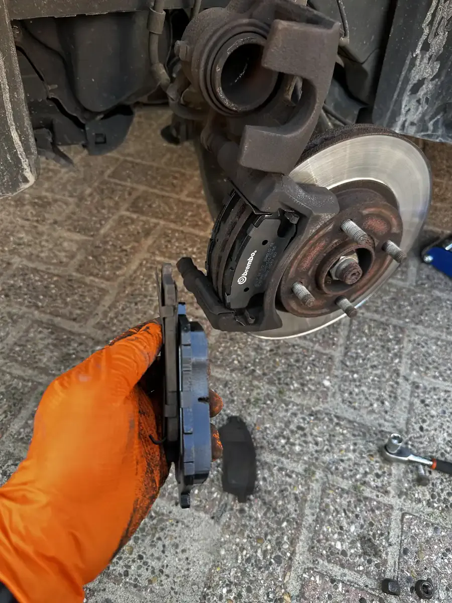
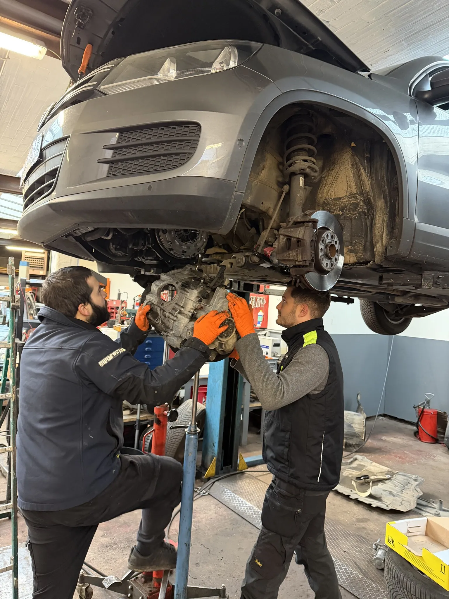

Votre voiture a besoin d'un entretien? Un voyant s'allume sur le tableau de bord? Chez DMT AUTOGROUP sur la Mechelsesteenweg à Zaventem, on diagnostique le problème et on le règle — rapidement, honnêtement, sans surprise sur la facture. 15 ans d'expérience, toutes marques confondues. Heeft uw auto onderhoud nodig? Brandt er een waarschuwingslampje op het dashboard? Bij DMT AUTOGROUP op de Mechelsesteenweg in Zaventem diagnosticeren we het probleem en lossen we het op — snel, eerlijk, zonder verrassingen op de factuur. 15 jaar ervaring, alle merken.
Un entretien régulier, c'est ce qui fait la différence entre une voiture qui roule 10 ans et une qui vous lâche sur le Ring un lundi matin. Chez DMT AUTOGROUP, on fait l'entretien complet selon les recommandations du constructeur : vidange, filtres, courroies, bougies, liquides — tout est vérifié. Que vous rouliez en diesel ou en essence, que votre voiture ait 20 000 ou 200 000 km, on adapte l'entretien à votre situation. Regelmatig onderhoud maakt het verschil tussen een auto die 10 jaar meegaat en eentje die u in de steek laat op de Ring op maandagochtend. Bij DMT AUTOGROUP doen we een volledig onderhoud volgens de aanbevelingen van de fabrikant: olieverversing, filters, riemen, bougies, vloeistoffen — alles wordt gecontroleerd. Of u nu diesel of benzine rijdt, of uw auto 20.000 of 200.000 km heeft, wij passen het onderhoud aan uw situatie aan.
Avant l'hiver, on vous recommande un check complet : batterie, antigel, essuie-glaces, niveau de liquide de frein. Quand l'été arrive, on vérifie la climatisation, le liquide de refroidissement et l'état des pneus. Voor de winter raden we een volledige check aan: accu, antivries, ruitenwissers, remvloeistofniveau. Als de zomer komt, controleren we de airconditioning, koelvloeistof en de staat van de banden.
Ces petits gestes saisonniers évitent les grosses pannes. Un entretien fait à temps, c'est aussi moins cher qu'une réparation en urgence. Deze kleine seizoensgebonden ingrepen voorkomen grote pechgevallen. Onderhoud op tijd is ook goedkoper dan een noodreparatie.

On voit souvent des gens qui arrivent paniqués parce qu'un voyant s'allume. Dans 90% des cas, c'est un capteur à 30 euros — pas un moteur à remplacer. Notre garage à Zaventem est équipé d'outils de diagnostic professionnel Launch et Omnitech qui lisent tous les calculateurs de votre véhicule. On trouve la panne, on vous explique ce qu'il en est, et on répare. We zien het vaak: mensen die in paniek binnenkomen omdat er een lampje brandt. In 90% van de gevallen is het een sensor van 30 euro — geen motor die vervangen moet worden. Onze autogarage in Zaventem is uitgerust met professionele diagnosetools van Launch en Omnitech die alle computers van uw voertuig uitlezen. We vinden de storing, leggen het uit, en herstellen.
Pas de devinettes, pas de pièces changées pour rien. On lit les codes erreur précis — P0300 pour un raté d'allumage, P0171 pour un mélange trop pauvre, P0420 pour le catalyseur. Notre outil couvre les diagnostics spécifiques par marque : BMW, Mercedes, Audi, Volkswagen, Peugeot, Renault. Geen giswerk, geen onderdelen die voor niets vervangen worden. We lezen de exacte foutcodes uit — P0300 voor ontsteking, P0171 voor een te mager mengsel, P0420 voor de katalysator. Onze tools dekken merkspecifieke diagnose: BMW, Mercedes, Audi, Volkswagen, Peugeot, Renault.
On ne se limite pas au moteur. On scanne aussi l'ABS, les airbags, la boîte de vitesses et la climatisation. Vous repartez avec un diagnostic clair en 30 minutes. We beperken ons niet tot de motor. We scannen ook ABS, airbags, versnellingsbak en airconditioning. U vertrekt met een duidelijke diagnose binnen 30 minuten.


Les freins, c'est pas un truc qu'on reporte. Si vos freins grincent, vibrent ou que la pédale est molle, passez chez nous à Zaventem. On remplace les plaquettes, les disques, les étriers — on utilise des pièces de qualité comme Brembo. Un truc qu'on voit souvent : des gens qui ont payé 900 euros chez un concessionnaire pour des freins. Chez nous, c'est moitié prix pour la même qualité Brembo. Remmen zijn niet iets dat je uitstelt. Als uw remmen piepen, trillen of het pedaal zacht aanvoelt, kom langs bij ons in Zaventem. We vervangen remblokken, schijven, remklauwen — we gebruiken kwaliteitsonderdelen zoals Brembo. Iets wat we vaak zien: mensen die 900 euro betaald hebben bij een concessiehouder voor remmen. Bij ons kost dat de helft, voor dezelfde Brembo-kwaliteit.
Pas besoin de prendre rendez-vous trois semaines à l'avance. On fait aussi la purge et le remplacement du liquide de frein — un entretien souvent oublié mais qui change tout pour la distance de freinage. Si votre véhicule a aussi subi des dégâts de carrosserie suite à un accrochage, on s'en occupe en même temps. U hoeft niet drie weken op voorhand een afspraak te maken. We doen ook het ontluchten en vervangen van de remvloeistof — een vaak vergeten onderhoudsbeurt die alles verandert voor de remafstand. Heeft uw voertuig ook carrosserieschade na een aanrijding? Dan pakken we dat tegelijk aan.
Un bruit de grincement au freinage? C'est souvent un témoin d'usure qui touche le disque. Un bruit sourd ou des vibrations dans le volant? Les disques sont probablement voilés. Plus vous attendez, plus la réparation coûte cher. Een piepend geluid bij het remmen? Dat is vaak een slijtageindicator die het schijf raakt. Een dof geluid of trillingen in het stuur? Dan zijn de schijven waarschijnlijk vervormd. Hoe langer u wacht, hoe duurder de herstelling wordt.

L'embrayage patine? La boîte de vitesses craque quand vous passez les rapports? C'est exactement le genre de travaux qu'on fait tous les jours dans notre atelier de mécanique à Zaventem. On démonte, on diagnostique, on remplace ce qu'il faut. Boîte manuelle ou automatique, on gère les deux. Slipt de koppeling? Kraakt de versnellingsbak bij het schakelen? Dat is precies het soort werk dat we elke dag doen in ons mechanisch atelier in Zaventem. We demonteren, diagnosticeren en vervangen wat nodig is. Manuele of automatische versnellingsbak, we behandelen beide.
L'embrayage, c'est le genre de réparation où les devis varient du simple au double. On a vu des devis à 3000 euros chez des concessions pour un travail qu'on fait à 1200-1500. On reconnaît les signes d'usure : le point de patinage qui monte, la pédale qui devient dure, une odeur de brûlé dans les côtes. De koppeling is het soort reparatie waarbij offertes enorm uiteenlopen. We hebben offertes van 3000 euro bij concessiehouders gezien voor werk dat wij doen voor 1200-1500. We herkennen de tekenen van slijtage: het koppelingspunt dat hoger komt te liggen, een pedaal dat stijf wordt, een brandgeur in hellingen.
Si votre régime moteur monte mais que la voiture n'accélère plus comme avant, c'est souvent le disque d'embrayage qui est fini. On remplace le kit complet — disque, mécanisme et butée — pour ne pas devoir tout redémonter six mois plus tard. Als het toerental stijgt maar de auto niet meer accelereert zoals voorheen, is het koppelingsschijf vaak versleten. We vervangen de volledige kit — schijf, drukgroep en druklager — zodat u niet zes maanden later alles opnieuw moet laten demonteren.

Le voyant ABS reste allumé? C'est souvent un capteur de roue ou le module ABS lui-même. Dans notre garage à Zaventem, on diagnostique le problème avec nos outils informatiques et on remplace uniquement ce qui est défectueux. Ce type de panne, on le voit toutes les semaines. Blijft het ABS-lampje branden? Meestal is het een wielsensor of de ABS-module zelf. In onze autogarage in Zaventem diagnosticeren we het probleem met onze computertools en vervangen we alleen wat defect is. Dit soort panne zien we elke week.
Notre diagnostic ABS fonctionne en plusieurs étapes. D'abord, on lit le code erreur pour identifier quel capteur ou quel circuit est en cause. Ensuite, on teste le signal de chaque capteur de roue à l'oscilloscope. Si c'est un capteur défectueux, on le remplace en moins d'une heure. Si c'est le bloc hydraulique ou le calculateur ABS, on vous donne un devis détaillé avant d'intervenir. Onze ABS-diagnose werkt in meerdere stappen. Eerst lezen we de foutcode uit om te bepalen welke sensor of welk circuit het probleem veroorzaakt. Daarna testen we het signaal van elke wielsensor met de oscilloscoop. Als het een defecte sensor is, vervangen we die in minder dan een uur. Als het het hydraulische blok of de ABS-computer is, krijgt u een gedetailleerde offerte vooraf.
L'ABS, c'est votre sécurité — surtout en hiver quand les routes sont glissantes. Sans ABS, votre voiture bloque les roues au freinage sur route mouillée. C'est un risque réel en Belgique où il pleut plus de 200 jours par an. ABS is uw veiligheid — vooral in de winter als de wegen glad zijn. Zonder ABS blokkeert uw auto de wielen bij het remmen op nat wegdek. Dat is een reëel risico in België waar het meer dan 200 dagen per jaar regent.
Problème de démarrage? Vitres électriques qui ne marchent plus? Batterie à plat? On gère tout ce qui est électrique et électronique dans votre voiture. Remplacement de batterie, diagnostic du circuit de charge, réparation de faisceaux — notre garage à Zaventem a le matériel pour traiter les pannes électriques de toutes marques. Startproblemen? Elektrische ramen die niet meer werken? Lege batterij? We behandelen alles wat elektrisch en elektronisch is in uw auto. Batterijvervanging, diagnose van het laadcircuit, reparatie van kabelbomen — onze garage in Zaventem heeft de apparatuur om elektrische storingen van alle merken aan te pakken.
On teste aussi l'alternateur et le démarreur. Un alternateur faible, c'est une batterie qui se vide en quelques jours. Un démarreur qui hésite le matin, c'est une panne qui arrive sans prévenir. On fait le test de charge de la batterie en 5 minutes. We testen ook de alternator en de startmotor. Een zwakke alternator betekent een accu die binnen een paar dagen leeg is. Een startmotor die 's ochtends aarzelt, is een panne die zonder waarschuwing komt. We doen de accutest in 5 minuten.
Les voitures modernes ont des dizaines de modules électroniques. On connaît ces systèmes par coeur, on sait où chercher quand quelque chose tombe en panne. Moderne auto's hebben tientallen elektronische modules. We kennen deze systemen door en door, we weten waar we moeten zoeken als er iets uitvalt.

Du simple réglage au remplacement complet, notre atelier mécanique gère tous les travaux moteur. Perte de puissance, consommation excessive, fumée à l'échappement — on trouve la cause et on répare. C'est un problème classique sur les diesel après 150 000 km. Van eenvoudige afstelling tot volledige vervanging, ons mechanisch atelier behandelt alle motorwerken. Vermogensverlies, overmatig verbruik, rook uit de uitlaat — we vinden de oorzaak en herstellen. Dit is een klassiek probleem bij diesels na 150.000 km.
On travaille autant sur les petits moteurs essence que sur les gros diesels, toutes marques confondues. Réglage de la distribution, remplacement de la courroie ou de la chaîne de distribution, nettoyage des injecteurs — on fait tout dans notre garage automobile à Zaventem. Un moteur bien réglé consomme moins et pollue moins. C'est aussi un point vérifié au contrôle technique. We werken zowel aan kleine benzinemotoren als aan grote diesels, alle merken. Afstelling van de distributie, vervanging van de distributieriem of -ketting, reiniging van de injectoren — we doen het allemaal in onze autogarage in Zaventem. Een goed afgestelde motor verbruikt minder en vervuilt minder. Dat is ook een punt dat bij de technische keuring gecontroleerd wordt.
Votre contrôle technique approche? Passez d'abord chez DMT AUTOGROUP à Zaventem. On fait un pré-contrôle complet : freins, éclairage, émissions, suspension, direction — tout ce que le centre de contrôle va vérifier. Si quelque chose ne passe pas, on le répare avant que vous y alliez. Technische keuring binnenkort? Kom eerst langs bij DMT AUTOGROUP in Zaventem. We doen een volledige voorcontrole: remmen, verlichting, uitstoot, ophanging, stuurinrichting — alles wat het keuringscentrum controleert. Als er iets niet in orde is, herstellen we het voordat u gaat.
Résultat : vous passez du premier coup et vous évitez la contre-visite. On connaît les points de contrôle par coeur. Les habitants de Sterrebeek, Nossegem et Woluwe-Saint-Lambert qui prennent la E40 passent souvent la semaine avant leur rendez-vous au centre. C'est la meilleure façon d'éviter les mauvaises surprises. Resultaat: u slaagt in één keer en vermijdt de herkeuring. We kennen de controlepunten uit het hoofd. Inwoners van Sterrebeek, Nossegem en Woluwe-Saint-Lambert die de E40 nemen, komen vaak de week voor hun afspraak bij het keuringscentrum. Dat is de beste manier om verrassingen te vermijden.
Pas forcément. Dans la grande majorité des cas, c'est un capteur qui déconne ou un petit souci électronique — pas un moteur à remplacer. Chez DMT AUTOGROUP à Zaventem, on branche la valise diagnostic et en 30 minutes on sait exactement ce qui se passe. Souvent, c'est une réparation à 30-80 euros — parfois c'est juste un filtre à changer lors d'une vidange. Appelez-nous au 0484 11 58 13 avant de paniquer. Niet per se. In de meeste gevallen is het een sensor die kuren heeft of een klein elektronisch probleem — geen motor die vervangen moet worden. Bij DMT AUTOGROUP in Zaventem sluiten we de diagnosetool aan en binnen 30 minuten weten we precies wat er aan de hand is. Vaak gaat het om een reparatie van 30-80 euro — soms is het gewoon een filter dat vervangen moet worden tijdens een olieverversing. Bel ons op 0484 11 58 13 voor u in paniek raakt.
Un grincement aigu, c'est souvent le témoin d'usure des plaquettes qui touche le disque — il est temps de les changer. Un bruit sourd avec des vibrations dans le volant, ce sont plutôt les disques qui sont voilés. Dans les deux cas, ne tardez pas : plus vous roulez avec des freins usés, plus la réparation coûte cher. Si c'est après un choc, ça peut aussi être un problème de carrosserie. Passez chez nous à Zaventem, on vérifie gratuitement. Een hoog piepend geluid is vaak de slijtage-indicator die het schijf raakt — tijd om te vervangen. Een dof geluid met trillingen in het stuur wijst eerder op vervormde schijven. In beide gevallen: wacht niet te lang. Hoe langer u rijdt met versleten remmen, hoe duurder de herstelling wordt. Als het na een botsing is, kan het ook een carrosserieprobleem zijn. Kom langs in Zaventem, we controleren gratis.
Oui, toutes les marques sans exception — BMW, Mercedes, Audi, Volkswagen, Peugeot, Renault, Toyota, Hyundai, et les autres. On connaît les spécificités de chaque constructeur. Certaines pannes reviennent souvent sur certains modèles, et à force on les repère très vite. Ja, alle merken zonder uitzondering — BMW, Mercedes, Audi, Volkswagen, Peugeot, Renault, Toyota, Hyundai, en de rest. We kennen de eigenheden van elke fabrikant. Bepaalde storingen komen vaak terug bij bepaalde modellen, en door ervaring herkennen we die heel snel.
C'est un classique. On voit régulièrement des gens qui arrivent avec un devis d'un autre garage où on leur propose de tout remplacer. Souvent, la moitié des pièces listées n'ont pas besoin d'être changées. Chez nous, on vous montre la pièce usée, on vous explique pourquoi elle doit être remplacée, et on ne touche pas au reste. Si c'est bon, c'est bon. Dat is een klassieker. We zien regelmatig mensen die binnenkomen met een offerte van een andere garage waar alles vervangen moet worden. Vaak hoeft de helft van de onderdelen op die lijst helemaal niet vervangen te worden. Bij ons tonen we u het versleten onderdeel, leggen we uit waarom het vervangen moet worden, en raken we de rest niet aan. Wat goed is, is goed.
En moyenne, nos tarifs sont 30 à 50% moins chers qu'en concession. La raison est simple : on a moins de frais de structure, et on utilise des pièces de qualité équivalente (OEM ou marques comme Brembo, Bosch, Mann) sans la marge du constructeur. Le travail est le même, souvent fait par des mécaniciens plus expérimentés — que ce soit pour une vidange, un contrôle technique ou une réparation. Gemiddeld liggen onze tarieven 30 tot 50% lager dan bij een concessiehouder. De reden is simpel: we hebben minder overheadkosten en gebruiken onderdelen van gelijkwaardige kwaliteit (OEM of merken zoals Brembo, Bosch, Mann) zonder de marge van de fabrikant. Het werk is hetzelfde, vaak uitgevoerd door meer ervaren monteurs — of het nu gaat om een olieverversing, een technische keuring of een herstelling.
Lundi — Vendredi · 08:30 — 18:00
Mechelsesteenweg 270, 1933 Zaventem
Maandag — Vrijdag · 08:30 — 18:00
Mechelsesteenweg 270, 1933 Zaventem